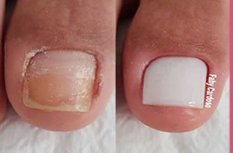
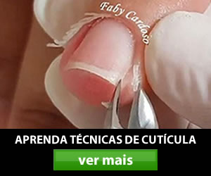
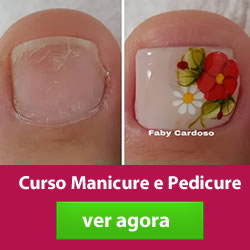

Aprenda o passo a passo completo — da preparação das mãos à cutilagem fundinha, sem medo de machucar e sem insegurança na hora de atender.
Conheça mais →
A insegurança na hora de cutilar faz o procedimento demorar mais e a cliente perceber a hesitação.
Sem uma técnica que realmente entrega resultado, fica difícil fidelizar quem já passou pela cadeira.
Vídeos soltos na internet não substituem um passo a passo estruturado, do básico ao avançado.
Um curso pensado tanto para quem está começando quanto para quem já atende e quer elevar o padrão do trabalho.
Nota média 4.9 de 5 — alunas destacam a didática da Faby Cardoso e a facilidade de acompanhar o passo a passo, mesmo começando do zero.
Conheça os detalhes completos e as condições de acesso na página oficial do curso.
Conheça mais →
